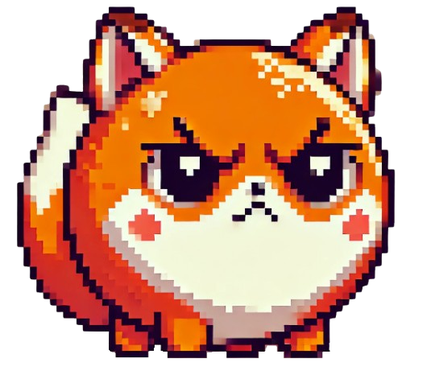
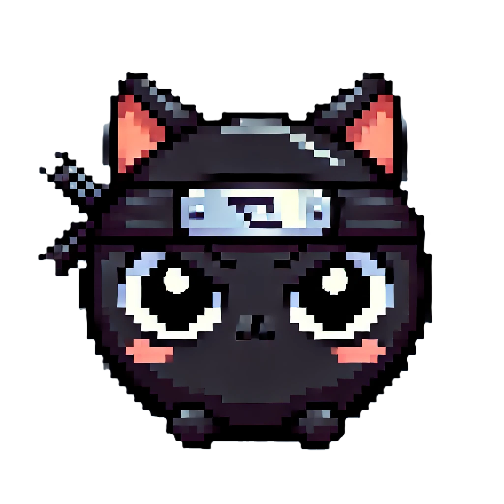

Angry foxes
Angry Foxes é um jogo inspirado em Angry Birds em que o objetivo usar as raposas do INSPER para derrotar os mascotes de outras faculdades!
Prévia!
Tente derrubar os mascotes das outras faculdades para ganhar o jogo!
Personsagens:


Raposa Principal
Raposa Bomba
Raposa Ninja